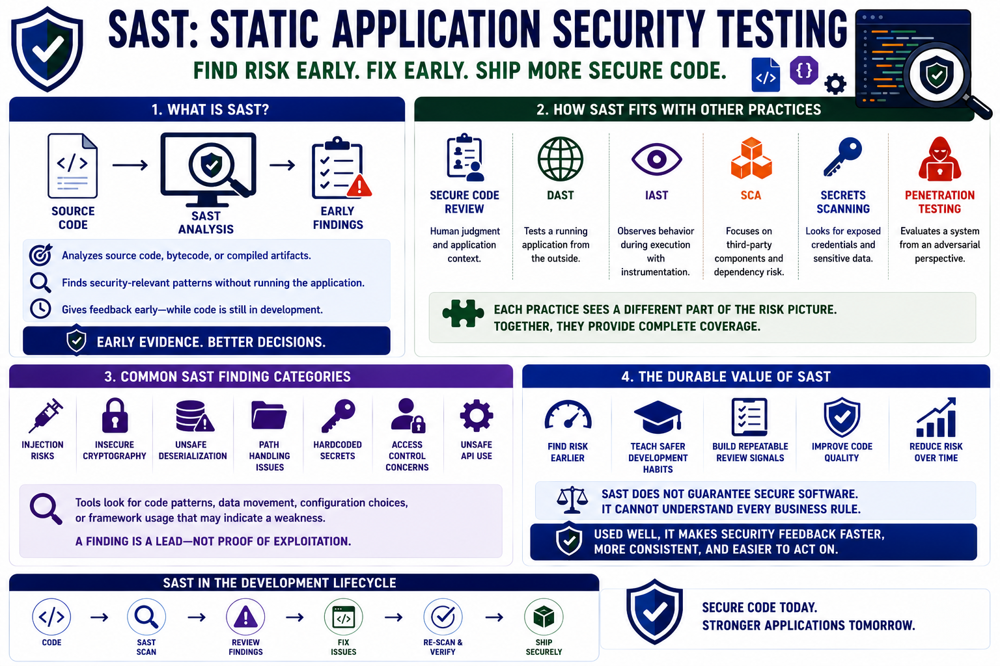

What SAST Means
Connecting to LMS... Progress: in progress

Narration
Static Application Security Testing, or SAST, analyzes source code, bytecode, or compiled artifacts to identify security-relevant patterns without requiring a live attack scenario against a running application. It gives teams a way to inspect implementation choices early, while code is still close to the developer and before risky patterns are packaged into releases. SAST is not a substitute for thinking, but it is a useful source of early evidence.
SAST is different from related practices. Secure code review adds human judgment and application context. DAST tests a running application from the outside. IAST observes behavior during execution with instrumentation. SCA focuses on third-party components and dependency risk. Secrets scanning looks for exposed credentials. Penetration testing evaluates a system from an adversarial perspective. These practices complement one another because each sees a different part of the risk picture.
Common SAST finding categories include injection risks, insecure cryptography, unsafe deserialization, path handling issues, hardcoded secrets, access control concerns, and unsafe API use. The tool is usually looking for code patterns, data movement, configuration choices, or framework usage that may indicate a weakness. A finding should be treated as a lead that requires review, not as an automatic proof of exploitation.
The durable value of SAST is defensive quality improvement. It helps teams find risky code patterns earlier, teach safer implementation habits, and build repeatable review signals into normal engineering workflows. It cannot guarantee secure software, and it cannot understand every business rule. Used well, it reduces risk by making security feedback faster, more consistent, and easier to act on.